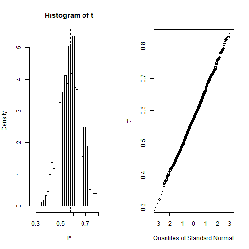
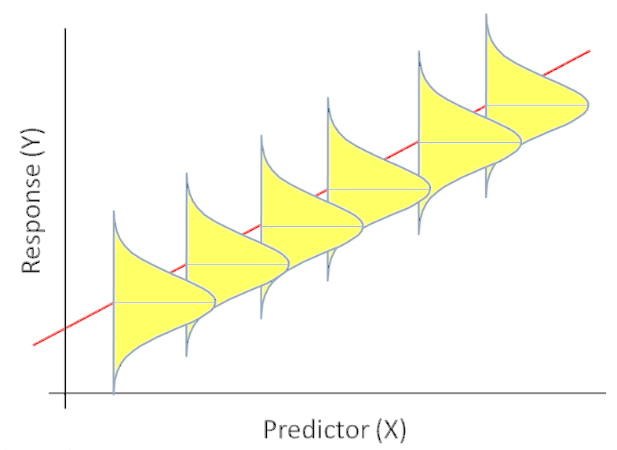

Linear Regression Basics
Adam J Sullivan
Assistant Professor of Biostatistics
Brown University
Linear Regression
Outline
- One Categorical Covariate
- One Continuous Covariate
- Multiple Covariates
The Data for Class
- We will consider the data behind the story: "Comic Books are Still Made By Men, For Men and About Men".
- This data is part of the
fivethirtyeightpackage: - To explore the variable names run the following code:
library(fivethirtyeight)
?comic_characters
Appearances
- We will consider appearances on the comic books.
- We will see what predicts the number of appearances.
One Categorical Covariate - Binary
Binary Covariate
- With this type of covariate, we are comparing some outcome against 2 different groups.
- In order to make these comparisons it depends on the outcome we are working with.
- We will perform these tests based on the outcome and then use confidence intervals to assess.
Differences in appearances by publisher
- Let's consider the difference in appearances by publisher
library(fivethirtyeight)
library(tidyverse)
cnt <- comic_characters%>%
group_by(publisher) %>%
tally()
mn<- comic_characters%>%
group_by(publisher) %>%
summarise(mean_app=mean(appearances, na.rm=T))
full_join(cnt,mn)
Differences in appearances by publisher
- Let's consider the difference in appearances by publisher
## # A tibble: 2 x 3
## publisher n mean_app
## <chr> <int> <dbl>
## 1 DC 6896 23.6
## 2 Marvel 16376 17.0
Differences in Appearances by Publisher
- We have learned how to do this previously.
- We first did this comparison with a t-test
- Then we did this with an F-test in ANOVA
Appearance by Publisher: t-test
- Consider this with a t-test
t.test(appearances~publisher, comic_characters)
##
## Welch Two Sample t-test
##
## data: appearances by publisher
## t = 4.9476, df = 13552, p-value = 7.605e-07
## alternative hypothesis: true difference in means is not equal to 0
## 95 percent confidence interval:
## 3.980214 9.203299
## sample estimates:
## mean in group DC mean in group Marvel
## 23.62513 17.03338
Appearances by publisher: ANOVA
- Consider with ANOVA
library(broom)
tidy(aov(appearances~publisher, comic_characters))
## # A tibble: 2 x 6
## term df sumsq meansq statistic p.value
## <chr> <dbl> <dbl> <dbl> <dbl> <dbl>
## 1 publisher 1 199019. 199019. 22.6 0.00000197
## 2 Residuals 21819 191840416. 8792. NA NA
ANOVA vs t-test
- t-test and ANOVA should give us the same results.
- We can see that in our output this is not true.
- What were the assumptions of ANOVA?
Appearances by publisher: t-test
- Consider this with a t-test
t.test(appearances~publisher, comic_characters, var.equal=TRUE)
##
## Two Sample t-test
##
## data: appearances by publisher
## t = 4.7577, df = 21819, p-value = 1.971e-06
## alternative hypothesis: true difference in means is not equal to 0
## 95 percent confidence interval:
## 3.876078 9.307436
## sample estimates:
## mean in group DC mean in group Marvel
## 23.62513 17.03338
Linear Regression
model <- lm(appearances~publisher, comic_characters)
tidy(model)
glance(model)
Linear Regression
## # A tibble: 2 x 5
## term estimate std.error statistic p.value
## <chr> <dbl> <dbl> <dbl> <dbl>
## 1 (Intercept) 23.6 1.16 20.4 1.89e-91
## 2 publisherMarvel -6.59 1.39 -4.76 1.97e- 6
## # A tibble: 1 x 11
## r.squared adj.r.squared sigma statistic p.value df logLik AIC
## <dbl> <dbl> <dbl> <dbl> <dbl> <int> <dbl> <dbl>
## 1 0.00104 0.000991 93.8 22.6 1.97e-6 2 -1.30e5 2.60e5
## # ... with 3 more variables: BIC <dbl>, deviance <dbl>, df.residual <int>
Interpreting the Coefficients: Categorical
- Intercept is the average for the reference group.
- Each coefficient is the average change between the reference group and the one of interest.
Interpreting the Coefficients: Categorical
- Intercept interpretation: Every DC character has on average 23.6 appearances.
- Marvel Coefficient: Every marvel character has on average 6.59 less appearances than DC.
One Binary Categorical Variable - Continuous Outcome
- We can perform
- t-test with equal variances
- ANOVA
- Linear Regression
- All yield the same exact results
Assumptions of Linear Regression
- Linearity: Function \(f\) is linear.
- Mean of error term is 0. \[E(\varepsilon)=0\]
- Independence: Error term is independent of covariate. \[Corr(X,\varepsilon)=0\]
- Homoscedacity: Variance of error term is same regardless of value of \(X\). \[Var(\varepsilon)=\sigma^2\]
- Normality: Errors are normally Distributed
What about more categories?
- We can also use linear regression with multiple categories.
mod <- lm(appearances~sex, comic_characters)
tidy(mod)
What about more categories?
- We can also use linear regression with multiple categories.
## # A tibble: 6 x 5
## term estimate std.error statistic p.value
## <chr> <dbl> <dbl> <dbl> <dbl>
## 1 (Intercept) 19.7 14.8 1.33 0.182
## 2 sexFemale Characters 1.37 14.8 0.0927 0.926
## 3 sexGenderfluid Characters 263. 69.2 3.80 0.000146
## 4 sexGenderless Characters -6.82 26.4 -0.258 0.796
## 5 sexMale Characters -0.640 14.8 -0.0433 0.965
## 6 sexTransgender Characters -15.7 96.7 -0.162 0.871
How do we interpret?
- We need to know the baseline.
## # A tibble: 7 x 3
## sex n mean_sex
## <chr> <int> <dbl>
## 1 Agender Characters 45 19.7
## 2 Female Characters 5804 21.0
## 3 Genderfluid Characters 2 282.
## 4 Genderless Characters 20 12.8
## 5 Male Characters 16421 19.0
## 6 Transgender Characters 1 4
## 7 <NA> 979 5.13
Working with Factors
- Since we are interested in knowing whether or not male characters appear more often, we need to change how we view the factor.
- We will work on the following:
- Renaming factors
- Reordering factor levels.
Working with Factors: Renaming
comic_characters <- comic_characters %>%
mutate(sex = fct_recode(sex,
"Agender" = "Agender Characters",
"Female" = "Female Characters",
"Genderfluid" = "Genderfluid Characters",
"Genderless" = "Genderless Characters",
"Male" = "Male Characters",
"Transgender" = "Transgender Characters"
))
Working with Factors: Relevel
comic_characters <- comic_characters %>%
mutate(sex = fct_relevel(sex,
"Female",
"Male",
"Transgender",
"Agender",
"Genderfluid" ,
"Genderless"
))
Regression again
mod <- lm(appearances~sex, comic_characters)
tidy(mod)
Regression again
## # A tibble: 6 x 5
## term estimate std.error statistic p.value
## <chr> <dbl> <dbl> <dbl> <dbl>
## 1 (Intercept) 21.0 1.29 16.3 2.65e-59
## 2 sexMale -2.01 1.50 -1.34 1.81e- 1
## 3 sexTransgender -17.0 95.6 -0.178 8.59e- 1
## 4 sexAgender -1.37 14.8 -0.0927 9.26e- 1
## 5 sexGenderfluid 261. 67.6 3.87 1.10e- 4
## 6 sexGenderless -8.20 22.0 -0.373 7.09e- 1
Interpreting the Coefficients: Categorical
- Intercept interpretation: Every Male Character has on average 19 appearances.
- Agender coefficient: Every Agender character has on average 0.64 more appearances than male characters
Whats happening?
ggplot(comic_characters, aes(x = sex, y = appearances)) +
geom_point() +
geom_point(stat = "summary", fun.y = "mean", color = "red", size = 3) +
theme(axis.text.x = element_text(angle = 90, hjust = 1))
Whats happening?

One Continuous
One Continuous Covariate
- We will consider one continuous covariate.
- We will consider year.
Example: Year and Appearances
- Consider the effect of year on appearances.
- With categorical data we plotted this with box-whisker plots.
- We can now use a scatter plot
Scatter Plot: Year and Appearances
ggplot(comic_characters, aes(year, appearances)) +
geom_point() +
geom_smooth(method="lm") +
xlab("Year") +
ylab("Appearances")
Scatter Plot: Year and Appearances

Modeling What We See
- There might not be a connection or there might be a very small one, let's explore further.
- How can we do this?
- How does linear regression work?
How do we Quantify this?
- One way we could quantify this is \[\mu_{y|x} = \beta_0 + \beta_1X\]
- where
- \(\mu_{y|x}\) is the mean time for those whose year is \(x\).
- \(\beta_0\) is the \(y\)-intercept (mean value of \(y\) when \(x=0\), \(\mu_y|0\))
- \(\beta_1\) is the slope (change in mean value of \(Y\) corresponding to 1 unit increase in \(x\)).
Population Regression Line
- With the population regression line we have that the distribution of appearances for those at a particular year, \(x\), is approximately normal with mean, \(\mu_{y|x}\), and standard deviation, \(\sigma_{y|x}\).
Population Regression Line

Population Regression Line
- This shows the scatter about the mean due to natural variation. To accommodate this scatter we fit a regression model with 2 parts:
- Systematic Part
- Random Part
The Model
- This leads to the model \[Y = \beta_0 + \beta_1X + \varepsilon\]
- Where \(\beta_0+\beta_1X\) is the systematic part of the model and implies that \[E(Y|X=x) = \mu_{y|x} = \beta_0 + \beta_1x\]
- the variation part where we have \(\varepsilon\sim N(0,\sigma^2)\) which is independent of \(X\).
What do We Have?
- Consider the scenario where we have \(n\) subjects and for each subject we have the data points \((x,y)\).
- This leads to us having data in the form \((X_i,Y_i)\) for \(i=1,\ldots,n\).
- Then we have the model: \[Y_i = \beta_0 + \beta_1X_i + \varepsilon_i\]
- \(Y_i|X_i \sim N\left(\beta_0 + \beta_1X_i , \sigma^2\right)\)
- \(E(Y_i|X_i) = \mu_{y|x} = \beta_0 + \beta_1X_i\)
- \(Var(Y|X_i ) = \sigma^2\)
Picture of this
What Does This Tell Us?
- We can refer back to our scatter plot now and discuss what is the "best" line.
- Given the previous image we can see that a good estimator would somehow have smaller residual errors.
- So the "best" line would minimize the errors.
Residual Errors
In Comes Least Squares
- The least squares estimator of regression coefficients in the estimator that minimizes the sum of squared errors.
- We denote these estimators as \(\hat{\beta}_0\) and \(\hat{\beta}_1\).
- In other words we attempt to minimize \[\sum_{i=1}^n \left(\varepsilon_i\right)^2 = \sum_{i=1}^n \left(Y_i - \hat{\beta}_0 - \hat{\beta}_1X_i\right)^2\]
Inferences on OLS
- Once we have our intercept and slope estimators the next step is to determine if they are significant or not.
- Typically with hypothesis testing we have needed the following:
- Population/Assumed Value of interest
- Estimated value
- Standard error of Estimate
Confidence Interval Creation
- with 95% confidence intervals of \[\hat{\beta}_1 \pm t_{n-2, 0.975} \cdot se\left(\hat{\beta}_1\right)\] \[\hat{\beta}_0 \pm t_{n-2, 0.975} \cdot se\left(\hat{\beta}_0\right)\]
- In general we can find a \(100(1-\alpha)\%\) confidence interval as \[\hat{\beta}_1 \pm t_{n-2, 1-\dfrac{\alpha}{2}} \cdot se\left(\hat{\beta}_1\right)\] \[\hat{\beta}_0 \pm t_{n-2, 1-\dfrac{\alpha}{2}} \cdot se\left(\hat{\beta}_0\right)\]
Example: Year and Appearances
model <- lm(appearances~year, data=comic_characters)
tidy(model, conf.int=TRUE)[,-c(3:4)]
glance(model)
Example: Year and Appearances
## # A tibble: 1 x 11
## r.squared adj.r.squared sigma statistic p.value df logLik AIC
## <dbl> <dbl> <dbl> <dbl> <dbl> <int> <dbl> <dbl>
## 1 0.0146 0.0145 93.8 313. 1.74e-69 2 -1.26e5 2.52e5
## # ... with 3 more variables: BIC <dbl>, deviance <dbl>, df.residual <int>
Example: Year and Appearances
## # A tibble: 1 x 11
## r.squared adj.r.squared sigma statistic p.value df logLik AIC
## <dbl> <dbl> <dbl> <dbl> <dbl> <int> <dbl> <dbl>
## 1 0.0146 0.0145 93.8 313. 1.74e-69 2 -1.26e5 2.52e5
## # ... with 3 more variables: BIC <dbl>, deviance <dbl>, df.residual <int>
Interpreting the Coefficients: Continuous
- Before we can discuss the regression coefficients we need to understand how to interpret what these coefficients mean.
- \(\beta_0\) is mean value for \(Y\) when \(X=0\).
- What about \(\beta_1\)?
Interpreting the Coefficients: Continuous
- Then we consider \(\beta_1\) to see the meaning of this we do the following \[ \begin{aligned} E(Y|X=x+1) - E(Y|X=x) &= \beta_0 + \beta_1(x+1) - \beta_0 - \beta_1x\\ &= \beta_1 \end{aligned} \]
Interpreting the Coefficients: Continuous
- We consider \(\beta_0\) first.
- Does this value have meaning with our current data?
- The estimated value of time level is only applicable to year within the range of our data.
- Many times the intercept is scientifically meaningless.
- Even if meaningless on its own, \(\beta_0\) is necessary to specify the equation of our regression line.
- Note: People do sometimes use mean centered data and the intercept is then interpretable.
Interpreting the Coefficients: Continuous
- This gives us the interpretation that \(\beta_1\) represents the mean change in outcome \(Y\) given a one unit increase in predictor \(X\).
- This is not an actual prescription though, this is considering different subjects or groups of subjects who differ by one unit.
- Below are correct interpretations of \(\beta_1\) in our example.
- These results display that the mean difference in appearances for a 1 year difference is -0.596
- These results display that the mean difference in time for a 10 year difference is -5.96